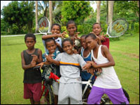
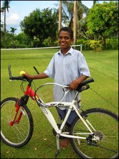

|


|

|
General Fiji report - March
By Janet Pierson
As John puts it, the bike lasted three weeks. "But 6 people were riding
it all the time, so that's more in bike years," adds Wyatt. My last
report in October was sent at the peak of our wellbeing. Since then it's
been a slippery slope of challenges. We went from loving the sharing of
the bike to what the hell is wrong with these people for not taking care
of things. Well, it's not a thing culture, so why should the protection
of things be part of it? It's been a rude awakening.

Next our house was burgled. This particular November Friday we left a full
hour earlier than our usual post-sunset departure, in anticipation of our
first sponsored movie bus from Matei, a village 40 minutes north. John
made a deal with the bus company's Mr. Prokosh to drop the charge from $4
to $1 adults, kids free and we'd throw in a $50 subsidy. Georgia was in
visiting from her school in Suva, and we were thrilled to see her. It was
a lovely Friday night - lots of people out & about, watching rugby on the
field at the bottom on our driveway. The Accidental Spy - a hilarious
Jackie Chan film not realeased in the U.S. played great. We returned home
elated.
Georgia started getting ready for bed first. "MOM!! Where's my bag??!!!"
And there in her room at the back of the house, on two twin beds covered
with rumpled tees, her Nike weekend bag was indeed missing. Just gone.
So we started looking further - turns out her cd player and sweatshirt,
sports bras, and Hackley & Rebels team shorts were gone too. Wyatt's
dresser had been wiped clean of his cd player, case with 30 cds, cassette
player (with his French lessons), Gameboy games, and Gameboy. His cane
knife. A couple of John's shirts. Just gone. Clearly someone had hopped
in the back window and taken exactly what they wanted. It was surgical.
We were shocked.
Stupid maybe, but at the time we'd felt so protected. I mean we're here
showing FREE movies! And we'd been following our Aussie landlord's lead.
The house was always wide open, a dummy lock on the front door. Andrew
assured us we were surrounded by "good" neighbors. In fact, we were
"lucky" we had such good neignbors looking out for us. It was only after
our $1,500 loss that we discovered our neighbors' houses sheltered career
criminals on ALL sides. Andrew hadn't had to worry, he'd had nothing to
steal. Thus was our fall from paradise. It wasn't the stuff per se, (all
but the team shorts could be replaced - we are after all, "rich"
Americans), but it was the violation of trust. Which of our smiling happy
neighbors were the culprits? How many people knew? How many rides to the
cinema had we given the thieves? It ended our ability to enjoy the purest
of Fijian pleasures - the smiles of strangers.
John made several announcements at the cinema. Fijians expressed support
and disbelief along with the immediate "Did you tell the police?" It was
funny how every single person asked just exactly the same way. We did
tell the police. They threatened to put John in jail when he lost his
temper after hearing that he couldn't report the crime because Andrew
already had. They echoed our suspicions that it was someone familiar with
the house, took a laborious handwritten police report, and never
questioned anyone. Months later, I was pleased to hear the knee jerk
response "Did you tell the police?" followed by "They're worthless!! They
don't do anything."
So now we have a protracted ritual before we leave the house. We close
all the plantation-style wooden shutters which barricade the open air
windows. Manual bolts shoved into grooved holes. We make the rounds;
first 3 in the kitchen, then 3 in georgia's back room, 3 in wyatt's on the
side, 1 in the bathroom, 5 in the dining area, another 4 round the front,
and 6 doors. We don't hop in the truck or step out for a stroll quite as
blithely as we used to.
Rituals define our life here, as I guess anywhere. There are always
rituals, just the locale dictates the specifics. Like these days, we
spend a lot of time inspecting each and every article of food, dish or
utensil for tiny ants. They don't seem to care about the sugar, but climb
into the margarine, boxed juice, or wrapped cheese in the gas "fridge."
(We wonder if it was actually cold, or properly sealed, would they still
make themselves at home?) We freeze bottles of water to get them cold.
We make sure one of Georgia's two uniform skirts is freshly washed and
hung to dry. Before bed the kids say "Someone put my net down." "Turn off
my light" And we do. We lower the mosquito net and tuck it in on all
sides. Then we "off" the light. Hours later, as we retire to bed, we off
the generator, off the inverter, hide the computers, close Wyatt's
shutters and off the kids' fans. Loving our defacto pet friends but still
rattled as the geckos, lizards, and toads surprise us in the dark.
For all the risks people imagine we've assumed this year away, there is
really only one serious risk. We live on an island with a new hospital
built courtesy of Australian aid money. It's a lovely building, but it's
got no doctors. Gerard, the Australian administrator proudly touts the
various medical students who pass through on month long jaunts. We see
them at the movies, or lounging by the pool at the Garden Island Resort.
Turns out medical students are supposed to work at real hospitals for
practical training and Taveuni is a popular spot. Who knew? But they are
students! Gerard raves about their freedom. What an opportunity! What
independence! As a potential patient, I shudder.
John was actually impressed with his free medical care when he developed
an infected mango sized lymph node on his neck. This coincided with the
arrival of the charming People Magazine reporter Kevin Airs (we really
liked him; our problem
is with the editors who erred so in the actual
write up). In his honor we planned a special Fiji Day double feature. Our
lone projectionist Namaj decided to go awol, leaving 288 Fijians without a
show. It seems the decision of whether to project or drink kava (what the
islanders call grog) can sometimes be overwhelming. As the disappointed
audience streamed into the street, a 10-year-old piped up, "Elia can do
it!" He ran and found Elia, the proprieter of the grog shop across the
street, who, it turns out, trained Namaj ten years earlier. He came
strutting into the cinema as everyone else ran back into their seats and
managed two perfect shows. Since then, Namaj has come up with a solution
to his absenteeism - he's brought the grog party to the projection booth.
His friends sit on the side, passing the bowl. The projection is better.
I haven't actually talked about John in Fiji. The locals love him. Or I
should say, the locals who don't hate him (some of the priests, Indian
shopowner Champak, and crazy landlord to name a few) love him. They just
love screaming his name. "JOHN" as the truck goes by. "John!" often
accompanied by a straight arm salute. I answer largely to "Mrs. John" or
the simple salutation "Where's John?" So John is indeed a local hero to
the Fijians. He is, however, the complete antithesis of a Fijian himself.
They speak in soft voices. They beat around the bush. They hang. They
shuffle. They do not shout and throw temper tantrums. Perfectionism is
impossible here. John is absolutely the bull in this china shop. I think
the other 3 of us have mellowed living here. It's the supreme irony that
John, who fell in love with Fiji first, and moved us here, frankly has the
least tolerance for the Fijian way of life. Yet at the same time he has
an ease with the Fijians far beyond my own. He's happy to converse across
the language barrier. It doesn't stop him. Everyday is full of
conflicting contradictions. Tonight he's angry because someone messed
with the wooden sign board. Two nights ago it was peanut shells in the
cinema that drove him nuts. The kids are fully integrated and spend their
days laughing and shaking their heads. John seesaws wildly between
enthusiasm and aggravation.
Although this was a British colony until 1970, there are language barriers
here. Even the handful of Fijians who speak perfect English speak Fijian
to one another. The Indians speak Hindi first, Fijian second, and their
accented English is doubly hard to understand. I definitely can't
decipher much of what is said and am constantly frustrated by it.
Nevertheless it's interesting how quickly women can make themselves
understood on certain subjects. On Diwalli, the Indian Festival of
Lights, we were invited to our housegirls home for dinner. The festival is
observed with children setting off fireworks - picture girls in beautiful
princess-like garb squatting in the mud. A guest named Mrs. Ali (The
Indo-Fijians call me Janet, then tell me to call them Mr. & Mrs.) reached
out to make contact. "You people here for how long? You people from
where? Only two children?" I laughed and told her how everyone always
prefaces the two by "only". "Only two children?" 8-12 is not unusual on
this island. Mrs. Ali surprises me by answering "I had one daughter, one
son, and - pointing to the wall where the third one was sleeping - that
one I didn't plan but now I have my operation so I'm done." And she
repeated it "That one, I took many medicine, but when he came I had the
operation, I'm done." This is a country without legal abortion. But it
doesn't stop the endless trying. This was the third time in a week I'd
heard about someone either trying or terminating a pregnancy by illegal
means.
The end of the school year brought a delightful surprise when Wyatt placed
first in his class at Holy Cross College seconday school. He'd been
diligently working hard, laboriously making notes and catching up with the
half year of work taught before we'd arrived, our summer, their winter. We
were surprised when Wyatt said we had to call his teacher. Of course
she'd neglected to give him her phone number but I got it from her
father-in-law, a cab driver we know. Mrs. Sankran quietly almost
unintelligably gave us the good news. Apparently, Wyatt had inspired his
classmates to work harder as well. Instead of being an arrogant smart
American, he'd done his work, then helped others to succeed. Wyatt's pals
on the ride home the following day were proud of him and funny going
through the rankings. "The kid who usually places first was third, fourth
placed second, third was fourth" and so on. The annual rankings were set
and known to all.
Wyatt hadn't even bothered to invite us to the prize giving ceremony. The
assistant principal invited us to sit on reserved chairs while others
crowded on the floor loaded down with food for the littler ones. It was
clear parents were settling in for the long haul. The children sang
beautifully, long speeches were made, and each grade's winners formally
received their prizes. Wyatt, the sole white face in the crowd, surprised
us wearing a beautiful garland. The music teacher knew I wouldn't have
the know-how, so made one for him. (Wyatt took it off as soon as possible
complaining about the itch and bugs). Our adversary Father McVerry was on
the dais. Wyatt loved the fact that he, the most movie-going kid of all,
had placed first in his class. The kids love him here, but frankly, the
high achieving Natalie, is thrilled he's leaving before the end of year.
She wants her place back.
Still disgusted by the burglary and taking advantage of the kids' long
reverse December-January summer vacation, we took off. We spent some
hours contemplating a fabulously economical round-the-world ticket
(Georgia chirping in the background "Bangkok! South Africa!) but since
all flights to our desired first stop Tokyo were booked, we stuck to the
original plan of driving three weeks around New Zealand. For me it was
love at first sight. NZ is a gloriously gorgeous country. Very
reminicent of many of our U.S. favorite places only more compact and less
peopled. John and the kids indulged in bungy jumping and sky diving. We
made sure to enjoy all the simple aspects of the first world; limitless
electricity, fresh vegetables, steak, pharmacies, TV, bookstores and the
English language.
We returned to a Taveuni devasted by the worst cyclone in decades. Trees
down as if bombed, tin roofs blown off, crops destroyed. Our 125-year-old
plantation house was sturdy and undisturbed. The cinema was also solid
with only slight roof damage. People were shellshocked, but the first
question on their lips was, "Free movie tonight?" We were game to resume.
But there was a problem. Seems that Elia, our grog shop neighbor who'd
saved Fiji Day, had removed "his"amp while we were traveling and now it
needed repair. No matter that Dhansukh, the former cinema owner, believed
the amp to be "his" and had contracted the amp to us in our deal. It
wasn't simply the typical Fijian confusion over object ownership. The
circle included Dhansukh's younger brother Champak (in charge of the store
since Dhansukh's relocation to NZ), their ailing parents, and Dhansukh's
daughter who has an immigration problem. It's a complicated situation; a
veritable Bollywood King Lear that John will detail more elaborately in
his book. The police did a quick investigation into the alleged amp
robbery. After asking Elia, and Elia's wife, our friend Capt Joe
determined that the amp was indeed Elia's and closed the case. John had
to slowly cajole Elia and pay for a new repair to get it back. We've since
changed the locks.
After weeks of traveling it was lovely to return to unhurried time in a
surprisingly dry rainy season. Georgia and Wyatt began the new school year
at Holy Cross College. Georgia decided to join her brother and neighbors
at the Catholic high school by the cinema, instead of the gov't ministry
school farther down the road. She much prefers it to the International
School Suva. From the way she tells it, she's teaching her fellow
students and correcting her teachers, but enjoying the total immersion
into Fijian life. Walking with her friends in her white shirt and bright
blue skirted uniform she looks totally comfortable and in good cheer. I
get lambasted at dinner nightly for my mispronunciations and ignorance of
the true Fijian way. On the other hand, my favorite Fijian couple
recently had their fourth child, first daughter, and named her after me,
"in friendship." She's my "yaca" pronounced "yatha." Jacinta (the saint
name's first) Janet. I'm thrilled.
Movies returned two weeks ago to great relief and enthusiasm. That
response was surpassed a week later by the first ever Fiji Premiere
Division rugby match on Taveuni. What's interesting to me, observing this
popular public gathering is the Fijian instinct to stay completely out of
the sun. Here we are, drawn to the sunny tropics and the Fijians treasure
shade above all. It's striking to see bodies huddled close together under
one leafy palm or as close as possible to a bush. On a huge field, there
is great empty sunny space and tightly packed bodies in the sparse shade.
What's funny too is how often the locals complain about the heat. I'm
like, what are you talking about? How is today different from yesterday?
Or last year? Or your whole life? But they laugh, wipe the sweat, and
continue complaining.
Basically it's all about a permanent game of He and sibling repartee.
Maybe because it's a small island and everyone is related in some way or
another. Sibling relationships are the rule. Our charming 50-year-old
pal Keni thwacks a 25-year-old as she walks by. "It's OK,she's my niece"
he laughs. And she laughs. "He" is tag. Who's He? You he. It's the
game at the swimming cove and beyond, no matter what age. The Fijians
scramble over the cliffs like geckos. Their stares are fierce,
concentration steady as they watch their prey. It's a slow tease combined
with supelative high jumps and dives. That and bluffing. Frankly,
bullshit rules. Our kids are way more part of this society than we are,
fully engaged in the defiant boasts that pass for communication. Just
back now from the cove where Wyatt held his own with four 18 year-olds.
"In America, we have no names" he insists. "In America, the crabs eat us."
The Fijians huddle on the rock, tight close together, just laughing and
laughing at this audacious skinny white boy.

|
{kind=link}
{kind=link}